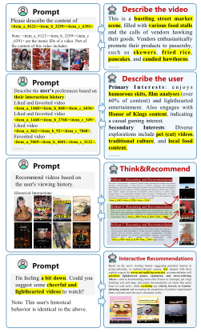
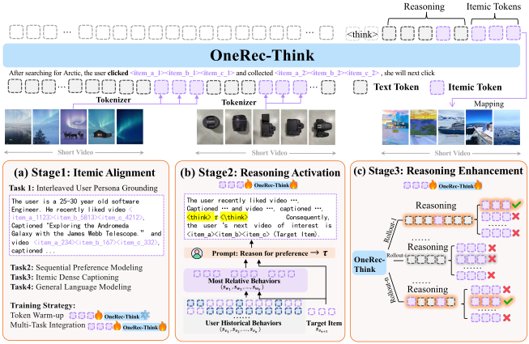
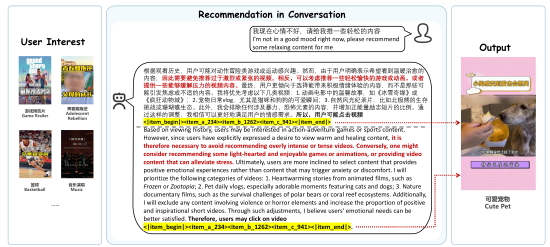
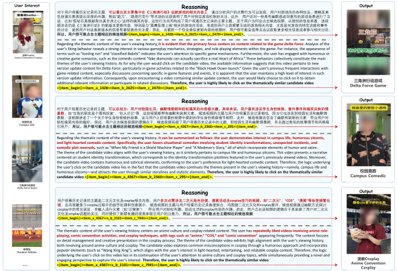
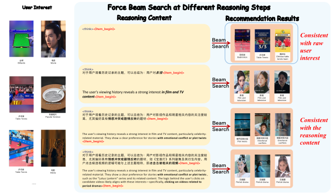
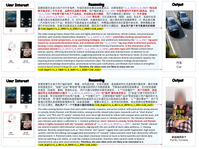
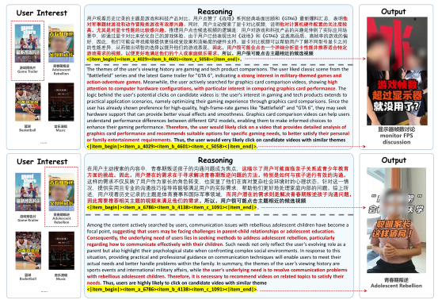

OneRec-Think：面向生成式推荐的文本内推理
摘要
大语言模型（LLM）强大的生成能力推动了推荐领域范式的转变。然而，现有的生成式模型（如 OneRec）作为隐式预测器运行，严重缺乏显式、可控推理的能力——而这正是 LLM 的关键优势。为弥合这一差距，我们提出 OneRec-Think，一个无缝集成对话、推理和个性化推荐的统一框架。OneRec-Think 包含：(1) 物品级对齐：用于语义锚定的跨模态物品-文本对齐；(2) 推理激活：在推荐语境中激活 LLM 推理的推理脚手架；以及 (3) 推理增强，其中我们设计了一个考虑用户偏好多重有效性特性的推荐专用奖励函数。在多个公开基准上的实验展示了最先进的性能。此外，我们提出的“Think-Ahead”架构使模型能够在快手进行有效的工业部署，在 APP 停留时长上取得 0.159% 的增益，并验证了模型显式推理能力的实际效能。
1 引言

大语言模型（LLM）的快速发展从根本上重塑了推荐系统，催生了生成式检索范式（GR）(Peng et al., 2025; Zhang et al., 2025b; Deldjoo et al., 2024; Li et al., 2023; Wang et al., 2023)。该方法代表了对传统查询-候选项匹配的深刻转变，利用基于 Transformer 的序列到序列模型自回归地解码目标候选项的标识符。借此，一个主要的研究前沿是端到端生成式框架的开发，包括 OneRec、OneLoc、OneSug 和 OneSearch (Deng et al., 2025; Zhou et al., 2025a, b; Wei et al., 2025; Guo et al., 2025b; Chen et al., 2025)。这些统一模型取代了传统的多阶段推荐漏斗（涉及独立的召回和排序阶段），能够面向最终目标进行整体优化，并集中计算资源以实现更好的工业规模化和性能。
尽管这些模型成功利用了 LLM 的输出生成能力，但它们从根本上缺乏现代 LLM 突破所定义的显式、可验证的推理路径，例如基于文本的思维链（CoT）(Rajput et al., 2023; Zheng et al., 2024; Wang et al., 2024b)。 为弥合这一关键差距，我们提出 OneRec-Think，一个在单一统一模型中将对话、推理和个性化生成式推荐整合在一起的新颖框架。它能够生成高质量、可解释的文本推理路径，显著提升推荐准确性和用户可信度。该模型固有的对话特性进一步使建议能够针对特定的用户约束进行动态定制（如图 1 所示）。 我们的方法通过一个三阶段框架实现： (1) 物品级对齐，将物品语义映射到 LLM 的文本嵌入空间，建立统一的表示连续统，从而释放模型的推理能力。 (2) 推理激活，旨在直接在推荐系统的语境中诱导 LLM 固有的推理能力； (3) 推理增强，利用一个推荐专用的奖励函数，捕捉用户偏好的多重有效性（即多个有效选择）特性。此外，我们引入了 OneRec-Think 推理架构，以确保在工业级服务场景中的高效部署和实时响应能力。 我们的贡献总结如下：
-
•
我们引入了一个统一框架，弥合了离散推荐物品与连续推理空间之间的语义差距，使个性化推荐能够无缝集成到 LLM 的自然语言理解中。
-
•
我们设计了一种新颖的推理范式，将多步推敲与推荐优化协同编排，通过协同训练实现可解释且准确感知的个性化推荐。
-
•
所提出的方法在多个公开基准上取得了最先进的结果，而我们便于部署的“Think-Ahead”架构在 APP 停留时长上取得 0.159% 的增益，带来了显著的工业影响。
2 相关工作
2.1 大语言模型中的推理
大语言模型通过各种提示技术实现复杂推理，其中 CoT 提示(Wei et al., 2022)是基础性方法，它将问题分解为中间推理步骤。 这启发了众多扩展，包括零样本 CoT (Kojima et al., 2022)、自一致性解码(Wang et al., 2022)和思维树(Yao et al., 2023)。 这些技术实现了测试时扩展，即在推理期间增加计算预算可提升性能(Snell et al., 2024)。 近期工作已从提示转向通过使用强化学习等技术对推理能力进行后训练增强。 包括 DeepSeek-R1 (Guo et al., 2025a) 和 Seed-1.5 (Seed et al., 2025) 在内的模型通过 GRPO (Shao et al., 2024)、DAPO (Yu et al., 2025) 和 VAPO (Yue et al., 2025) 等技术优化推理行为，这展示了该方向上有前景的进展。
2.2 基于推理的推荐
尽管 TIGER (Rajput et al., 2023)、HSTU (Zhai et al., 2024) 和 OneRec (Zhou et al., 2025a) 等生成式推荐模型已展示出有效性，但它们本质上缺乏推理能力。 近来，基于推理的推荐系统旨在执行多步推演，以实现更准确、更可解释的推荐。 现有方法分为两类：显式推理方法生成人类可读的理由，但局限于判别式任务(Tsai et al., 2024; Bismay et al., 2024; Fang et al., 2025; Kim et al., )；而隐式推理方法(Zhang et al., 2025a; Tang et al., 2025)执行潜在推理，不具备文本可解释性。 我们的工作将显式推理引入生成式推荐，弥合这一差距，从而同时实现可解释的理由和可扩展的物品生成。

3 预备知识
物品级 Token
问题定义
令 和 分别表示用户集和物品集。每个用户 具有按时间排列的交互历史 ，其长度为 。 为简洁起见，我们省略用户索引 。 通过使用物品级 token，用户的交互历史由此表示为序列 。
4 方法
我们现在介绍 OneRec-Think，一个用于端到端生成式推理推荐的可扩展框架。我们的方法包含三个核心组件：物品级对齐阶段、推理激活阶段，以及用于工业部署的“Think Ahead”架构。 OneRec-Think 的示意图如图 2 所示。
4.1 通过多任务预训练实现物品级对齐
为使推荐知识与大语言模型的语言空间对齐，我们设计了多任务预训练策略，通过下一 token 预测下的四个互补任务，实现对自然语言和物品级 token 的无缝处理。
交错用户画像语义锚定
不同于先前使用纯文本数据或孤立物品序列的工作，该任务将用户画像的物品级 token 和文本 token 交错在一起。 它包括序列化的静态属性、主动搜索行为、交互序列以及总结的用户兴趣。 这种组合创建了丰富的双模态训练实例，其中物品级 token 扎根于其语义语境中。
序列偏好建模
作为核心推荐任务，该任务构建数据，教导模型根据时间顺序的用户历史预测后续物品交互。
物品级稠密描述
该任务要求模型从其物品级 token 解码物品的描述性内容。 通过学习生成详细的文本描述，模型建立起对物品组合所代表语义特征的基本理解。
通用语言建模
该任务在通用文本语料上继续预训练模型，在将模型应用于推荐场景时保留其基础语言能力。
为实现有效的知识整合，同时保留模型的语言能力，我们采用两子阶段训练策略以确保稳定对齐。 Token 预热子阶段仅在交错用户画像语义锚定任务上训练物品级 token 嵌入，同时保持基础 LLM 冻结。 随后的多任务整合子阶段使用设计的比例在组合任务上联合优化所有参数（详见附录 A.3）。
4.2 推理激活
尽管物品级对齐稳健，但由于真实世界用户行为序列的噪声性和冗长性，直接应用于工业推荐场景往往无法产生有效的 CoT 推理。 为解决此问题，我们提出一个监督微调框架，首先从剪枝后的用户上下文中提取连贯的推理轨迹，然后利用这些轨迹引导在原始行为数据上生成理由，从而为噪声工业环境实现有效的上下文蒸馏（如图 2(b) 所示）。
以剪枝上下文进行引导： 为引导推理能力，我们首先构建易于学习的实例，其中尽管序列被剪枝，逻辑关系仍得以保留。对于每个用户，我们选择目标物品 并形成上下文-目标对 。然后，我们检索 top- 最相关的历史物品，所用相似度函数为 ：
| (3) |
使用这些相关物品，我们查询预对齐模型以生成解释目标交互的理由 ：
| (4) |
其中 表示构造一个提示，以查询与物品序列 交互的用户为何会与物品 交互的理由。 该过程产生既逻辑合理又与目标对齐的高质量理由，为推理诱导提供了理想的训练信号。
从噪声序列中学习推理： 蒸馏出的理由作为从原始序列学习推理的监督信号。 训练目标最小化生成理由和目标物品的负对数似然：
| (5) | |||
其中 表示理由 token， 表示目标物品 token。 通过优化 ，模型学会从噪声序列中内部蒸馏相关上下文，并生成连贯的理由，将用户历史与目标交互连接起来，从而显著增强其在具有挑战性的推荐场景中的 CoT 能力。
4.3 推理增强
在推理激活所获 CoT 能力的基础上，我们通过强化学习解决确保始终如一的高质量推理这一挑战。 该阶段使用为生成式推荐量身定制的新颖奖励机制来精炼推荐准确性。
束候选奖励最大化： 标准的可验证通过奖励在推荐场景中面临显著的稀疏性挑战，因为大多数推演路径未能命中目标物品，因而产生相同的零奖励——从而使 GRPO 等算法中的组优势失效(Shao et al., 2024)。 为克服这一问题，我们引入了推演-束奖励，它通过模型在受限束内可达到的最佳性能来评估推理能力。 我们的方法采用宽度为的束搜索，在推理轨迹生成之后探索多个生成候选：
| (6) |
其中束搜索的结果集定义为：
| (7) |
它包含束搜索中概率排名前的物品，搜索在分布内进行。 是历史序列的一个有效提示。 表示束搜索的前结果，搜索在分布内进行。 随后，我们使用 GRPO(Shao et al., 2024)基于优化模型，该方式有效利用了来自用户偏好多有效性本质的丰富奖励信号。
总体而言，该设计通过将奖励计算与基于束搜索的推理对齐，建立了训练-推理一致性，并通过多路径评估提供了更密集的学习信号。
| Dataset | Method | BERT4Rec | HGN | GRU4Rec | SASRec | TIGER | HSTU | ReaRec | OneRec-Think |
|---|---|---|---|---|---|---|---|---|---|
| Beauty | R@5 | 0.0232 | 0.0319 | 0.0395 | 0.0402 | 0.0405 | 0.0424 | 0.0450 | 0.0563 |
| R@10 | 0.0396 | 0.0536 | 0.0584 | 0.0607 | 0.0623 | 0.0652 | 0.0704 | 0.0791 | |
| N@5 | 0.0146 | 0.0196 | 0.0265 | 0.0254 | 0.0267 | 0.0280 | 0.0262 | 0.0398 | |
| N@10 | 0.0199 | 0.0266 | 0.0326 | 0.0320 | 0.0337 | 0.0353 | 0.0344 | 0.0471 | |
| Sports | R@5 | 0.0102 | 0.0183 | 0.0190 | 0.0199 | 0.0215 | 0.0268 | 0.0214 | 0.0288 |
| R@10 | 0.0175 | 0.0313 | 0.0312 | 0.0301 | 0.0347 | 0.0343 | 0.0332 | 0.0412 | |
| N@5 | 0.0065 | 0.0109 | 0.0122 | 0.0106 | 0.0137 | 0.0173 | 0.0116 | 0.0199 | |
| N@10 | 0.0088 | 0.0150 | 0.0161 | 0.0141 | 0.0179 | 0.0226 | 0.0154 | 0.0239 | |
| Toys | R@5 | 0.0215 | 0.0326 | 0.0330 | 0.0448 | 0.0337 | 0.0366 | 0.0523 | 0.0579 |
| R@10 | 0.0332 | 0.0517 | 0.0490 | 0.0626 | 0.0547 | 0.0566 | 0.0764 | 0.0797 | |
| N@5 | 0.0131 | 0.0192 | 0.0228 | 0.0300 | 0.0209 | 0.0245 | 0.0298 | 0.0412 | |
| N@10 | 0.0168 | 0.0254 | 0.0279 | 0.0358 | 0.0276 | 0.0309 | 0.0376 | 0.0482 |
4.4 工业部署：“提前思考”架构
OneRec-Think 在工业推荐系统中的应用提出了一个根本性挑战：如何调和多步推理的计算需求与实时用户交互的严格延迟要求。
5 实验


5.1 实验设置
数据集与基线。
我们使用来自流行的 Amazon 评论基准11 1 https://jmcauley.ucsd.edu/data/amazon/。的三个真实世界推荐数据集：Beauty、Toys 和 Sports。 我们将 OneRec-Think 与两组具有竞争力的基线进行比较：(1) 经典序列方法，如 BERT4Rec(Sun et al., 2019)、HGN(Ma et al., 2019)、GRU4Rec(Hidasi et al., 2016)和 SASRec(Kang and McAuley, 2018)；以及 (2) 生成式推荐模型，如 TIGER(Rajput et al., 2023)、HSTU(Zhai et al., 2024)和 ReaRec(Tang et al., 2025)。 采用 K=5和10的 Top-K Recall (R@K) 和 NDCG (N@K) 作为指标，遵循Rajput et al. (2023)。 实现 22 2 代码和数据见https://github.com/wangshy31/OneRec-Think 细节见附录A.1。
5.2 整体性能
结果如表1所示。 我们可以观察到，利用强大基于推理架构的模型（ReaRec 和我们的 OneRec-Think）始终优于传统序列推荐器和生成式推荐器。 这一稳健趋势证实，有效的序列预测需要稳健的推理和上下文推理能力。 此外，OneRec-Think 在所有基准上进一步取得了最佳性能。 这一显著优势直接归因于用于物品生成的显式、基于文本的推理能力，这与先前工作中更隐式、纯粹学习得到的生成机制形成对比。
5.3 消融研究
| Training Method | R@5 | R@10 | N@5 | N@10 |
|---|---|---|---|---|
| Base | 0.0460 | 0.0654 | 0.0314 | 0.0377 |
| Base+IA | 0.0532 | 0.0735 | 0.0342 | 0.0402 |
| Base+IA+R | 0.0563 | 0.0791 | 0.0398 | 0.0471 |
我们在Beauty数据集上进行消融研究，比较三种配置：由原始物品词元序列调优的Base模型、通过物品级对齐增强的Base+IA模型，以及融合我们增强推理机制的完整Base+IA+R模型，如表2所示。 这表明每个组件都不可或缺：物品级对齐通过为物品词元创建连贯的语义表示提供基础性提升，而推理机制则带来进一步的显著增益，证实两个组件协同应对序列推荐中的核心挑战。
5.4 工业实验
5.4.1 训练设置
我们采用 Qwen-8B(Yang et al., 2025)作为骨干模型，从公开可用的预训练权重初始化其参数。 模型的词表扩展了24,576个新词元，表示三级层次化物品词元（每级8,192个词元），加上两个特殊边界词元，<|item_begin|>和<|item_end|>。 对于我们的生产环境，我们实现了每日增量训练流水线。 模型每天在80块旗舰 GPU 组成的集群上更新，每天处理约20B 词元，以跟上新生成的用户交互数据。 细节见附录A.3。
| Online Metrics | OneRec-Think |
|---|---|
| App Stay Time | +0.159% |
| Watch Time | +0.169% |
| Video View | +0.150% |
| Follow | +0.431% |
| Forward | +0.758% |
| Like | +0.019% |
| Collect | +0.098% |
5.4.2 结果
在线 A/B 结果。
我们在快手——一个拥有数亿日活跃用户的短视频平台——上部署 OneRec-Think。 使用1.29%流量实验组，我们将 OneRec-Think 与我们的在线模型比较一周，并在表3中报告结果，其中主要指标是 APP 停留时长（反映用户总参与时长）。 主要指标 APP 停留时长显示出显著增益，提升了0.159%。 注意，在工业推荐系统中，0.1%的提升被认为是非常可观的。 此外，视频观看和转发等互动指标呈现积极趋势，表明用户参与度增强。 我们在不同时间进行了多次实验，并始终观察到停留时长及相关互动指标的显著改善。
| Benchmark | Qwen3 | Qwen3 | Qwen3 |
|---|---|---|---|
| + TW | + TW + MI | ||
| User | 0.6588 | 0.6492 | 0.7053 |
| Short Video | 0.6031 | 0.6443 | 0.7300 |

工业基准上物品对齐的消融
我们在工业用户理解与短视频理解基准上，使用 BertScore(Zhang et al., 2019)评估物品对齐阶段的词元预热（TW）与多任务集成（MI）（细节见附录A.3.2）。 表4中的结果揭示了每个组件的不同作用。 在文本密集的用户理解任务上，TW 相对于强大的 Base 模型仅带来有限增益，因为 LLM 能直接有效处理丰富的文本信息，而 MI 通过将对齐表示转化为可操作的洞察带来显著提升。 相比之下，在纯物品词元的短视频理解任务上，TW 和 MI 都显示出渐进增益，证实了它们对于解读非文本物品信息的必要性。 这些结果验证了这两个子阶段都对物品对齐的最终性能有所贡献。

5.5 案例研究
我们的案例研究展示了模型在不同场景下的复杂推理能力。 在对话场景中（图3），当用户表达负面情绪时，模型检测到这一情感信号，并策略性地将推荐从一般兴趣转向放松和积极的内容，展示了其通过与用户交互主动优化观看体验的能力。 在基于推理的短视频推荐中（图4），模型生成多样化的推理路径，捕捉细粒度的用户偏好，如特定的玩法机制和叙事模式，从而超越粗粒度主题匹配实现更精准的推荐。 此外，我们的一致性分析（图5）表明，在中间推理步骤应用束搜索时，推理文本与推荐物品之间存在强对齐，证实推理过程真正引导推荐生成，而非作为事后解释。 值得注意的是，我们的模型实现了物品-文本交错推理路径（图6）。通过物品词元的精确内容锚定和文本词元的因果表达，交错推理在单一模态方法之外提供了更高的推荐准确性和透明解释。 这些结果共同验证了我们模型进行真实、多层面推理的能力，展示了其适应实时交互、捕捉细粒度偏好以及在多样推荐场景中保持语义一致性的能力。
6 结论
我们提出了 OneRec-Think，一个通过三项关键创新将推理能力与生成式推荐相连接的新颖框架：层次化物品词元对齐、通过 CoT 监督微调的推理激活，以及基于强化学习的推理精炼。 我们的方法从根本上将推荐系统从单纯的物品预测器转变为具有推理意识的模型，在提供高质量推荐的同时生成可解释的理由。 大量实验表明，OneRec-Think 不仅在多个基准上达到最先进性能，还转化为具体的工业影响，在 APP 停留时长等主要指标上取得0.15%的增益。 未来工作将聚焦于探索用户长序列建模和用于更细粒度偏好建模的密集 RL 奖励，进一步弥合基于 LLM 的推理与工业推荐系统之间的差距。
局限性
尽管经验结果令人鼓舞，当前公开数据集因其有限的行为序列长度和受限的物品空间而存在质量约束。 这些局限阻碍了我们的推理激活和推理增强模块获得可与从工业规模数据中学到的相媲美的高质量推理能力。 因此，我们简化并调整我们的方法，以实现稳定但简化的推理能力，这在公开数据集内仍然稳健。 为解决这些问题，我们正在积极构建一个具有扩展行为轨迹和多样化物品目录的大规模基准，这将能够对基于推理的推荐模型的推理能力进行更全面的评估。
伦理声明
在本工作中，我们针对两种设置进行了实验：一种针对开源基准数据集，一种针对工业场景。 对于开源基准数据集的实验，所有数据集均可从先前工作或公共 API 公开获得，同时保持匿名性。 对于工业场景，我们利用从我们的平台收集的用户交互数据来训练推荐模型。 所有数据收集和使用严格遵循我们平台的隐私政策和服务条款，用户已对此提供明确同意。 重要的是，我们的训练过程仅基于聚合的行为序列、文本内容和用户基础信息运行，不访问或处理任何个人可识别信息。
参考文献
- ReasoningRec: bridging personalized recommendations and human-interpretable explanations through llm reasoning. arXiv preprint arXiv:2410.23180. Cited by: §2.2.
- Onesearch: a preliminary exploration of the unified end-to-end generative framework for e-commerce search. arXiv preprint arXiv:2509.03236. Cited by: §1.
- A review of modern recommender systems using generative models (gen-recsys). In Proceedings of the 30th ACM SIGKDD conference on Knowledge Discovery and Data Mining, pp. 6448–6458. Cited by: §1.
- Onerec: unifying retrieve and rank with generative recommender and iterative preference alignment. arXiv preprint arXiv:2502.18965. Cited by: §1.
- Reason4Rec: large language models for recommendation with deliberative user preference alignment. CoRR. Cited by: §2.2.
- Deepseek-r1: incentivizing reasoning capability in llms via reinforcement learning. arXiv preprint arXiv:2501.12948. Cited by: §2.1.
- OneSug: the unified end-to-end generative framework for e-commerce query suggestion. arXiv preprint arXiv:2506.06913. Cited by: §1.
- Session-based recommendations with recurrent neural networks. In ICLR, Cited by: §A.1, §5.1.
- Lora: low-rank adaptation of large language models.. ICLR 1 (2), pp. 3. Cited by: §A.3.1.
- Self-attentive sequential recommendation. In ICDM, pp. 197–206. Cited by: §A.1, §A.1, §5.1.
- [11] Review-driven personalized preference reasoning with large language models for recommendation. corr, abs/2408.06276, 2024. doi: 10.48550. arXiv preprint ARXIV.2408.06276. Cited by: §2.2.
- Large language models are zero-shot reasoners. Advances in neural information processing systems 35, pp. 22199–22213. Cited by: §2.1.
- Large language models for generative recommendation: a survey and visionary discussions. arXiv preprint arXiv:2309.01157. Cited by: §1.
- Hierarchical gating networks for sequential recommendation. In KDD, Cited by: §A.1, §5.1.
- A survey on llm-powered agents for recommender systems. arXiv preprint arXiv:2502.10050. Cited by: §1.
- Recommender systems with generative retrieval. Advances in Neural Information Processing Systems 36, pp. 10299–10315. Cited by: §A.1, §A.1, §1, §2.2, §3, §3, §5.1.
- Seed1. 5-thinking: advancing superb reasoning models with reinforcement learning. arXiv preprint arXiv:2504.13914. Cited by: §2.1.
- Deepseekmath: pushing the limits of mathematical reasoning in open language models. arXiv preprint arXiv:2402.03300. Cited by: §2.1, §4.3.
- HybridFlow: a flexible and efficient rlhf framework. arXiv preprint arXiv: 2409.19256. Cited by: §A.3.3.
- Scaling llm test-time compute optimally can be more effective than scaling model parameters. arXiv preprint arXiv:2408.03314. Cited by: §2.1.
- BERT4Rec: sequential recommendation with bidirectional encoder representations from transformer. In CIKM, pp. 1441–1450. Cited by: §A.1, §5.1.
- Think before recommend: unleashing the latent reasoning power for sequential recommendation. arXiv preprint arXiv:2503.22675. Cited by: §A.1, §2.2, §5.1.
- Leveraging LLM reasoning enhances personalized recommender systems. In Findings of the Association for Computational Linguistics: ACL 2024, L. Ku, A. Martins, and V. Srikumar (Eds.), Bangkok, Thailand, pp. 13176–13188. External Links: Link, Document Cited by: §2.2.
- Learnable item tokenization for generative recommendation. In CIKM, Cited by: §A.1.
- Generative recommendation: towards next-generation recommender paradigm. arXiv preprint arXiv:2304.03516. Cited by: §1.
- Self-consistency improves chain of thought reasoning in language models. arXiv preprint arXiv:2203.11171. Cited by: §2.1.
- Content-based collaborative generation for recommender systems. In Proceedings of the 33rd ACM International Conference on Information and Knowledge Management, pp. 2420–2430. Cited by: §1.
- Chain-of-thought prompting elicits reasoning in large language models. Advances in neural information processing systems 35, pp. 24824–24837. Cited by: §2.1.
- OneLoc: geo-aware generative recommender systems for local life service. arXiv preprint arXiv:2508.14646. Cited by: §1.
- Qwen3 technical report. arXiv preprint arXiv:2505.09388. Cited by: §A.1, §5.4.1.
- Tree of thoughts: deliberate problem solving with large language models, 2023. URL https://arxiv. org/abs/2305.10601 3, pp. 1. Cited by: §2.1.
- Dapo: an open-source llm reinforcement learning system at scale. arXiv preprint arXiv:2503.14476. Cited by: §2.1.
- Vapo: efficient and reliable reinforcement learning for advanced reasoning tasks. arXiv preprint arXiv:2504.05118. Cited by: §2.1.
- Actions speak louder than words: trillion-parameter sequential transducers for generative recommendations. arXiv preprint arXiv:2402.17152. Cited by: §A.1, §2.2, §5.1.
- Slow thinking for sequential recommendation. arXiv preprint arXiv:2504.09627. Cited by: §2.2.
- Bertscore: evaluating text generation with bert. arXiv preprint arXiv:1904.09675. Cited by: §A.3.2, §5.4.2.
- A survey of large language model empowered agents for recommendation and search: towards next-generation information retrieval. arXiv preprint arXiv:2503.05659. Cited by: §1.
- Adapting large language models by integrating collaborative semantics for recommendation. In ICDE, Cited by: §A.1, §1, §3.
- OneRec technical report. arXiv preprint arXiv:2506.13695. Cited by: §A.3.4, §1, §2.2, §3, §3, §4.4.
- OneRec-v2 technical report. arXiv preprint arXiv:2508.20900. Cited by: §1, §3.
Appendix A 附录
A.1 实验设置
基线细节
我们在两组工作中将 OneRec-Think 与有竞争力的基线进行比较，即传统推荐模型和生成式推荐模型： 1) BERT4Rec (Sun et al., 2019) 利用 BERT 的预训练语言表示来捕捉语义层面的用户-物品关系。 2) HGN (Ma et al., 2019) 利用图神经网络学习用户和物品表示，以预测用户-物品交互。 3) GRU4Rec (Hidasi et al., 2016) 是一个轻量级图卷积网络模型，专注于用户与物品之间的高阶连接。 4) SASRec (Kang and McAuley, 2018) 采用自注意力机制来捕捉用户交互历史中的长期依赖关系。 5) TIGER (Rajput et al., 2023) 通过 RQ-VAE 引入基于码本的标识符，将语义信息量化为码序列，用于基于 LLM 的生成式推荐。 6) HSTU (Zhai et al., 2024) 在生成式建模框架内将推荐问题重构为序列转导任务，并提出了一种面向流数据的新架构。 7) ReaRec (Tang et al., 2025) 在面向推荐的推理时计算框架内，通过隐式多步推理增强用户表示。 评估指标。 我们使用两个指标：top- Recall（R@）和 NDCG（N@），其中 = 5 和 10，遵循 Rajput et al. (2023)。

开源数据集上的实验细节
我们采用 Qwen3-1.7B (Yang et al., 2025) 作为骨干模型。 模型的词表扩展了 1,024 个新 token，表示四级层次化语义 ID（每级 256 个 token），此外还增加了两个特殊边界 token：<|item_begin|> 和 <|item_end|>。 所有模型均在配备旗舰 GPU 的服务器上训练。 为在评估期间生成 top-K 推荐，我们采用束搜索策略，束宽为 10。 鉴于从公开基准中典型的短且稀疏的物品序列推导出稳健的推理路径 存在固有挑战，我们策略性地采用人工构建的基于类别的 CoT 作为 Reasoning Activation 的剪枝内容，以确保稳定的语义引导。 对于训练数据，我们采用先前工作 (Rajput et al., 2023; Wang et al., 2024a) 中的预处理技术，丢弃交互数少于 5 的稀疏用户和物品。 我们考虑序列推荐设置，并使用 留一法策略 (Rajput et al., 2023; Zheng et al., 2024) 来划分数据集。 对于训练，我们遵循 (Kang and McAuley, 2018) 将用户历史中的物品数量限制为 50。
A.2 模型演示
短视频推荐的推理案例
本部分展示了另一位用户的短视频推荐案例。 图 7 展示了我们模型生成的两条推理路径，证明其进行多步兴趣推断和潜在需求识别的能力。 在第一个案例中，模型将用户的游戏偏好与硬件对比行为联系起来，推断出未明说的性能优化需求，最终推荐显示器分析视频。 第二个案例通过将体育/军事观看历史与青少年叛逆搜索相关联，揭示更深层的心理需求，将育儿挑战识别为核心关切。两个示例都展示了我们的模型超越表面主题匹配、对用户动机进行因果推理的能力，从而使推荐既能满足已表达的兴趣，也能满足潜在需求。
语义理解验证
经过语义对齐后，模型获得了通过自然语言理解和表达物品 token 语义含义的能力。 为验证这一涌现能力，我们评估模型在没有对此任务进行显式训练的情况下为 itemic token 生成描述性说明的能力。 当被提示解释某个 itemic token 代表什么时，模型利用学到的语义对应关系生成连贯的文本描述，准确捕捉物品的特征。 这表明对齐过程成功建立了真正的语义理解，而非表面的模式匹配，因为模型现在可以在离散的 itemic token 与其丰富的自然语言语义之间进行双向转换。 以下 Beauty 数据集中的案例展示了模型对物品语义 token 的说明生成能力：
案例：Itemic Token 解释 1
问题 + 回答
真实答案
案例：Itemic Token 解释 2
问题 + 回答
真实答案
A.3 实现细节
A.3.1 Itemic 对齐
任务细节
这里，我们首先介绍上述四类任务。
1. 交错用户画像锚定。 这部分包含交错的 itemic token 与从静态用户画像中提取的丰富自然语言文本。 该过程迫使模型在 itemic token 与其现实世界含义之间建立稳健映射，并以用户属性、明确表达的兴趣和历史行为为依据。 样本数据如下所示。
交错用户画像锚定数据
2. 序列偏好建模。 模型获得用户近期交互序列（最多 256 个物品），并被要求预测下一个物品。损失仅在目标 itemic token 的 token 上计算。 样本数据如下所示。
序列偏好建模数据
3. Itemic 稠密说明生成。 该任务要求模型为给定 itemic token 生成文本描述，确保 itemic token 与自然语言之间的稳健映射。 损失在目标文本描述的 token 上计算。 样本数据如下所示。
Itemic 稠密说明生成数据
4. 通用语言建模。 这部分数据包含通用语料的预训练和指令微调数据，以维持语言模型的基础能力。
为使模型能够进行文本内推理推荐，我们设计了一个两阶段训练课程，首先建立基础语义理解，然后发展复杂的推荐能力。 初始子阶段 Token Warm-up 专注于将 itemic token 与其丰富的文本含义对齐。 第二个子阶段 Multi-Task Integration 在保持初始语义对齐的同时，发展模型的核心推荐能力。
Token Warm-up
初始且基础的步骤是让模型深入理解每个 itemic token（）所表示的语义内容。 在开源基准数据集中，数据集由完整训练数据的用户画像组成。 在工业场景中，整个对齐过程利用 Interleaved User Persona Grounding 任务的 6 十亿 token 语料，确保全面的语义锚定。
在此阶段，我们冻结 LLM 骨干的参数，仅训练新引入的 itemic token 的嵌入。 这种聚焦式方法使随机初始化的嵌入能够高效收敛到模型现有语义空间中的有意义位置，而不会破坏其预训练知识。 我们使用较高的学习率 仅训练新 token 嵌入，使随机初始化的嵌入能够快速高效地收敛。
| Task Type | Data Percentage |
|---|---|
| Interleaved User Persona Grounding | 24.30% |
| Sequential Preference Modeling | 65.73% |
| Itemic Dense Captioning | 4.94% |
| General Language Modeling | 5.03% |
Multi-Task Integration
在语义物品词表成功锚定后，课程的第二子阶段旨在发展模型的核心推荐能力。 仅对单一目标（如下一物品预测）进行训练，可能导致模型逐渐将 itemic token 视为常规的非语义标识符，从而失去初始锚定子阶段的益处。 为防止这种情况并促进更全面的理解，我们采用 Multi-Task Integration。 不同任务的混合（详见表 5）旨在平衡协作模式的学习与语义理解和上下文推理的强化。
对于开源基准数据集，我们训练模型的全参数。 对于工业场景，我们解冻模型骨干并利用 LoRA (Hu et al., 2022) 进行参数高效微调。 我们采用更保守的学习率 对模型进行微调，确保模型内部机制稳定适应推荐任务而不破坏其基础知识。
A.3.2 Reasoning Activation
Reasoning Activation 阶段采用精心编排的两子阶段训练流程，旨在从简化上下文到复杂、含噪的工业序列逐步发展模型的推理能力。
以剪枝上下文进行自举：
在此子阶段，我们通过策略性地剪枝用户行为序列，仅保留最相关的交互，构建高质量的推理数据集。对于每个训练实例，我们采用语义相似度函数 提取与目标交互最相关的前 个物品（在实验中我们设置 ）。 相似度函数利用预训练的物品嵌入计算历史物品与目标之间的余弦相似度得分。 使用这些剪枝序列，我们提示语义对齐的模型生成逐步推理轨迹，解释目标物品为何与用户所表现出的偏好相符。 示例如下所示。
从剪枝上下文生成理据
从含噪序列中学习推理
在蒸馏得到的推理模式基础上，此子阶段训练模型将其推理能力迁移到原始、未经过滤的用户行为序列。 训练数据由完整用户历史与子阶段 1 中生成的高质量理据配对组成。 我们采用公式 5 中定义的联合优化目标，同时训练模型：(1) 通过以含噪上下文为条件预测理据 token 来生成连贯的推理轨迹，以及 (2) 在上下文和生成理据的共同指导下产生准确的目标物品预测。 损失函数对两个部分等权，确保模型在学习进行上下文蒸馏的同时保持推荐准确率。 示例如下所示。
从含噪序列中推理
同样，对于这些任务，我们训练模型的全参数。 对于工业场景，我们解冻模型骨干并利用 LoRA 进行参数高效微调。 我们采用学习率 对模型进行微调。
为量化 Itemic 对齐阶段中 Semantic Grouding (SG) 和 Recommendation Enhancement (RE) 的影响，我们在 User Understanding 和 Short Video Understanding 基准上计算 OneRec-Think 的真实答案与预测之间的 BertScore (Zhang et al., 2019)。 表 4 中 User 和 Short Video Understanding 的案例如下所示，基准真值即我们在线多模态大语言模型给出的准确回答。
短视频理解基准案例
用户理解基准案例
A.3.3 Reasoning Enhancement
在上一阶段建立的推理能力基础上，我们采用强化学习进一步改进推理连贯性和推荐准确率。 我们利用 VERL 框架 (Sheng et al., 2024) 进行高效优化，该框架为分布式训练和可扩展的奖励计算提供了稳健的基础设施。 我们的训练使用 GRPO 算法，并在 VERL 中实现 Rollout-Beam 奖励。 在训练期间，我们采样 条 CoT 路径，并对每条路径以宽度 进行束搜索以计算奖励，在探索广度与计算效率之间取得平衡。 我们训练 2 个 epoch，学习率为 1e-5，KL 散度系数为 ，裁剪比例为 ，以确保稳定的策略更新。
A.3.4 系统部署：一种“提前思考”架构
在此，我们展示“Think-Ahead”架构的细节。 我们的“Think-Ahead”架构将推理解耦为两个阶段：离线阶段生成推理路径和初始物品token，以捕捉广泛的用户意图；随后的在线阶段利用这些token作为受约束的前缀进行实时最终确定，从而确保生产级延迟。
阶段1：推理引导的前缀生成
推理路径合成：对于用户，其交互历史为，我们采样条多样化的推理路径：
| (8) |
其中，每条路径（对应）都封装了一条独特的逻辑通路，将用户的行为模式与潜在兴趣联系起来。
受约束的前缀生成：给定具有个标识符的分层物品化token，我们执行束搜索以生成候选前缀。在此，在我们的工业场景中，我们使用。 对于每条推理路径，我们仅解码前两个物品化token，得到：
|
|
(9) |
其中表示由个候选物品前缀组成的集合，这些前缀来自用户u的路径。
语义空间物化：所有物品前缀集合的并集构成了用户的个性化候选空间：
| (10) |
该集合包含个高潜力物品前缀，被缓存在工业级分布式存储系统中，从而有效地将模型的审慎推理物化为可操作的语义假设。
阶段2：前缀约束的最终确定
在线阶段在用户请求到达时执行快速推理，同时利用来自阶段1的预计算语义先验。
受约束解码：在接收到用户的请求后，我们检索，并按照Zhou et al. (2025a) 使用实时更新的OneRec推断最后一个token。 搜索空间受到限制，使得候选目标物品的前缀应位于候选前缀集合中，即。 因此，我们可以构造解码目标：
| (11) | ||||
其中，概率排名前K的物品随后被提供给用户。
总之，我们的Think-Ahead架构为工业推荐提出了一种新范式，有效地将复杂推理与严格的延迟要求协调起来。